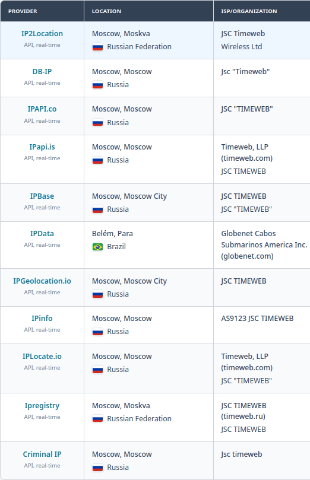

Некоторые веб-мастера случайным образом могут столкнуться с тем, что купленный внутри России хостинг не отдает HTTP/HTTPS страницы. При этом через wireshark видно, что пакеты приходят, нормально отрабатываются и генерируется корректный ответ. Только этот ответ не доходит до клиентского копмпьютера.
Причина в ТСПУ и нехватке свободных IPv4 адресов. Из-за этого хостеры закупают и используют диапазоны IP из других юрисдикций, например из Латинской Америки. И формально они делают все правильно, никаких ограничений на такую деятельность нет. Но авторы правил для ТСПУ могут считать совершенно иначе, и легально купленный в России хостинг с IP-адресом из недоверенного, по мнению ЕСПУ, диапазона, нормально работать не будет.
Совет следующий: перед покупкой хостинга узнавать, из какого диапазона будет выдан IP-адрес, и затем его проверить через https://www.iplocation.net/ или https://iplocation.io/.

Если же ТСПУ блокирует уже работающий сервер, надо звонить и писать в ГРЧЦ и спрашивать, по какой причине происходит фильтрация.
Оперативный дежурный ЦМУ ССОП ФГУП “ГРЧЦ”:
e-mail: support_asbi@noc.gov.ru, тел.: 8 800 600-19-62
Вторая линия технической поддержки АО «Данные и центр обработки и автоматизации»:
Tel: 8-800-600-19-24, e-mail: techsupport@dcoa.ru